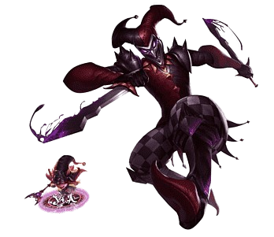

Quem é Shaco?
Shaco é um assassino travesso que causa o caos e confusão no campo de batalha. Seu kit de habilidades permite emboscar, enganar e eliminar inimigos rapidamente. A maestria com Shaco exige estratégia, precisão e um pouco de malícia.
Habilidades de Shaco
Enganar (Q)
Shaco fica invisível por um curto período e seu próximo ataque causa dano crítico. Use essa habilidade para emboscar inimigos ou escapar de situações perigosas.
Caixa-Jack (W)
Shaco coloca uma caixa armadilha que assusta e ataca inimigos quando ativada. Coloque-as em pontos estratégicos para controle de mapa e emboscadas.
Veneno de Dois Gumes (E)
Shaco lança uma adaga envenenada que causa dano e reduz a velocidade do alvo. Utilize essa habilidade para pokear inimigos e garantir eliminações.
Alucinações (R)
Shaco cria um clone de si mesmo que causa dano ao ser destruído. Use-o para confundir inimigos e causar dano adicional em lutas.
Melhores Builds para Shaco na Jungle
Build de Assassinato
- Item Mítico: Eclipse
- Botas: Botas da Mobilidade
- Itens Principais: Lâmina Fantasma de Youmuu, Draktharr, Colhedor de Essência
- Itens Situacionais: Cutelo Negro, Anjo Guardião, Limite da Razão
Build de Lutador
- Item Mítico: Hemodrenário
- Botas: Botas de Armadura
- Itens Principais: Hidra Raivosa, Dança da Morte, Semblante Espiritual
- Itens Situacionais: Sinal de Sterak, Coração Congelado, Anjo Guardião
Build de AP (Poder de Habilidade)
- Item Mítico: Colhedor Noturno
- Botas: Botas de Feitiçaria
- Itens Principais: Ampulheta de Zhonya, Tormento de Liandry, Capuz da Morte de Rabadon
- Itens Situacionais: Cajado do Vazio, Morellonomicon, Cetro de Cristal de Rylai
Dicas para Jogar de Shaco
-
Enganação e Emboscadas
Use sua habilidade Enganar (Q) para se aproximar invisivelmente de inimigos desprevenidos. Posicione-se para maximizar o dano de backstab (ataque pelas costas).
-
Controle de Mapas com Caixas
Coloque suas Caixas-Jack (W) em arbustos e pontos de controle no mapa para garantir visão e controle. Essas caixas podem assustar e desorientar inimigos, além de bloquear habilidades.
-
Clone para Confundir
Use seu Alucinações (R) para criar um clone que pode enganar inimigos e absorver dano. Utilize-o em momentos críticos para evitar habilidades perigosas ou para causar dano adicional.
-
Rotas e Farm
Planeje suas rotas de jungle para maximizar a eficiência. Priorize ganks nas lanes mais avançadas e sempre deixe suas caixas nos campos da jungle para uma limpeza rápida.
Truques Avançados
Use Flash + Enganar (Q) para alcançar lugares inesperados e escapar de situações perigosas.